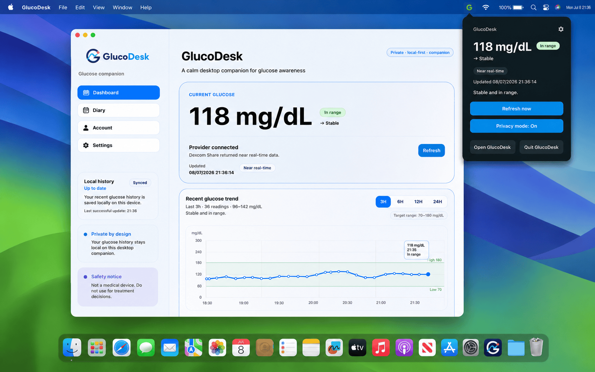
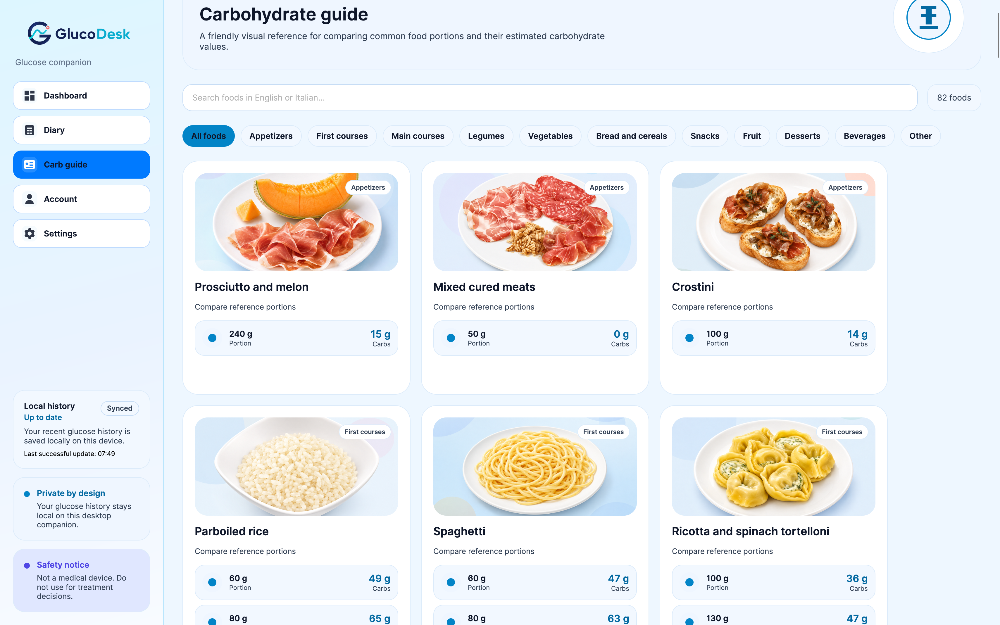

01
At a glance
See your latest reading, trend and glucose context immediately from the desktop.
A private desktop companion for CGM users. Keep the information that matters visible while you work, without constantly reaching for another device.

GlucoDesk brings live context, local history and useful insights into one calm desktop experience.
See your latest reading, trend and glucose context immediately from the desktop.
Review local history, recurring patterns and daily summaries without sending data to a GlucoDesk cloud.
Hide glucose values when you share your screen and keep your information under your control.
Current glucose, trend, target range, recent history, statistics and data completeness are presented in one focused view.

GlucoDesk lives quietly in the macOS menu bar or Windows system tray, so your glucose can stay visible without interrupting what you are doing.
Estimating carbohydrates from everyday portions is not always simple. GlucoDesk includes a visual food guide with common foods, reference portions and indicative carbohydrate values, available locally on your desktop.
Browse familiar foods in a clear visual catalogue.
Compare practical portions instead of relying only on abstract nutritional tables.
Search the guide directly from GlucoDesk without sending your glucose data anywhere.
Carbohydrate values are indicative references only and are not intended for insulin dosing or treatment decisions.

Review your local history and create clear PDF and Excel diaries with summaries, time blocks, recurring patterns and data completeness.

GlucoDesk does not require a GlucoDesk cloud for your glucose history. Cached readings, settings and local insights remain on your computer.
Readings and analysis remain on your device.
Secure operating-system storage is used where supported.
Hide glucose values instantly during calls or presentations.
The code is public and available for inspection.
Living with type 1 diabetes already requires enough attention. I built GlucoDesk to make glucose monitoring simpler, more discreet and less intrusive throughout the working day.
GlucoDesk is an independent open-source project designed to complement official CGM applications, not replace them.
GlucoDesk is currently available as a free preview for Apple Silicon Macs and Windows x64.
For Macs with Apple silicon.
This preview is not yet signed or notarized by Apple, so macOS may require one manual approval on first launch.
This approval is normally required only the first time.
Current builds are unsigned preview releases distributed through the official GlucoDesk GitHub repository.
GlucoDesk is not intended for treatment decisions, insulin dosing, emergency alerts, diagnosis or as a replacement for approved diabetes applications, CGM systems or medical devices.